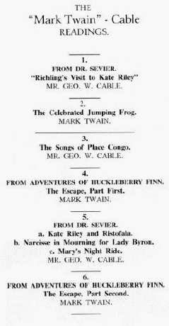

|
A computer isn't really a time machine, and there's no way we can actually watch "The Twins of Genius" on stage. But from the interactive program recreated here you can at least get a sense of what the various parts of their performances were like. The program itself is my attempt to reproduce a typical evening's show from the second half of the tour, when MT made the ending of Huck Finn the most prominent feature of the entertainment. At the start of the tour he was using some scenes from his forthcoming novel, but relied mainly on previously published material, old platform favorites like "The Golden Arm" and selections from the manuscript he called "Colonel Sellers as a Scientist." Here are a couple programs from the first half of the tour. Although these performances were well attended and reviewed, MT wasn't happy with the show. He wanted to "curtail Cable," and also to change his own material. During the tour's ten-day Christmas recess, he went home to Hartford and, as his notebooks show, worked energetically to redesign the evening's performance. 1885 audiences were handed a program much like the one below left. It's interactive: clicking on it will take you to textual versions of each part of the performance. |
|
 |
Cable's program changed very little from town to town, and as far as we can tell his "readings" from Dr. Sevier were pretty literally "readings" -- i.e. he stuck very closely to the printed text. According to the reviews, his singing voice was small, but very rich and expressive. You won't be able hear the "negro songs" he sang, but you can see the music. MT, on the other hand, thoroughly revised his printed texts to make them work as oral performances. The links to "The Escape" will take you to an attempt to reconstruct the way he "talked" Huck Finn, based on material in the Mark Twain Papers and derived from the University of California edition of the novel, edited by Walter Blair and Victor Fisher. MT didn't always follow this program, especially when giving more than one performance in a city. But this was the program he used most often in the second half of the tour, and the program he is referring to in the following passage, from a letter to Livy written 18 January 1885 from Chicago, after the third of three performances at the Central Music Hall: "Last night I was the greatest triumph we have ever made. I played my new bill, containing The Jumping Frog of Calaveras County (cut it down & told it in 13 minutes--quickest time on record) & Tom & Huck setting Jim free from prison--25 minutes--but it just went with a long roll of artillery-laughter all down the line, interspersed with Congreve rockets & bomb shell explosions, from the first word to the last." |